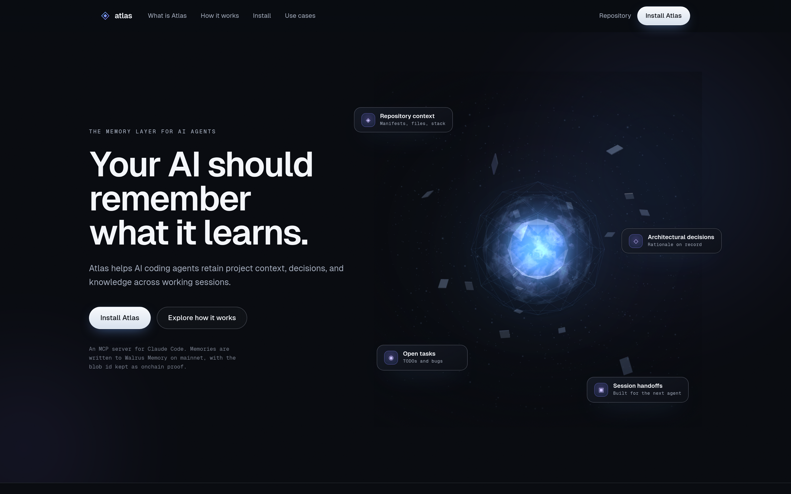

◇
atlas
Memory for coding agents
Your AI should
remember
what it learns.

Context windows end. Projects don’t.
ATLAS / 01
◇
atlas
01 / Remember
Save the
useful stuff.
Decisions. Bugs. The reason why.
Agent memory / example
atlas_save_memory
DECISION
Use Walrus as the system of record.
SQLite is a rebuildable local index.
✓ Saved to Walrus Memory
Sui Mainnet · persists across sessions
Your work outlives the session.
ATLAS / 02
◇
atlas
02 / Pick up
Next session.
Same context.
The next agent gets the handoff.
Recall by meaning.
New session / example
atlas_start_session
SUMMARY
Memory persistence wired up.
DECISION
Walrus is the system of record.
NEXT
Continue from the last handoff.
atlas_search_memory
“Where does memory live?”
↳ The saved decision, recalled.
Claude Code · Codex · Cursor
ATLAS / 03
◇
atlas
atlas
.
Your agent forgets.
Atlas remembers.
Install Atlas ↗
Claude Code · Codex · Cursor
Persistent memory. Built on Walrus.
ATLAS / 04